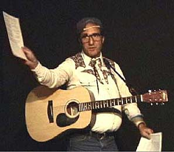

|
(www.BlueCanyonProductions.com)
"Santa Fe's —and therefore the world's—strangest web site. Fascinating sound clips and soul-nourishing content." - Bill Hutchison, staff writer, Santa Fe Reporter (See our Home Page) |
OTHER SERVICES
Jim Terr & Blue Canyon Productions

JIM TERR. Photo by Hadley Harper
See updated page about PERFORMANCES
See updated page about JINGLES
Award-winning and nationally-broadcast jingle writing and production, as well as video production, voice-overs, copy and script writing, audio production, custom songwriting, banquet/convention entertainment (see below), and acting (see "The $2.98 Video Collection.")
Jim Terr wrote and performed the national jingle favorite, "Sing a Song of Snapple."
Hear
our new JINGLES
written and produced for
the
spreading-like-blazes
Thom Hartmann Radio Program
and the top-rated
Jim Bohannon Radio Program
Click Here
|
I laughed. I cried. I
got in touch with my inner child and bought him an ice cream cone. Jim's casual, unscripted
stage presence provides an intimacy with his audience To hear a live performance sample, CLICK HERE The gentle humor and rich
warmth of the evening linger long after the last chord Funny, warm, enthusiastic, joyous and inexpensive. See this show! -Howard Singer Terr created a room full of love. -Santa Fe Reporter Wit, charm, irony--and good music, too! -Elizabeth West Jim Terr writes songs
like some people carry their lunch. I laughed. I cried. I drank "Wise, witty and whimsical!" -Tony Hillerman "Bodacious" -Dave Barry "A threat to musical serenity" -Billboard Magazine "A modern-day Mark Twain, Will Rogers, Jimmie Rodgers and Jackie Mason rolled into one." -Rick Sanjek, vice president, BMI "The fastest songwriter in north central New Mexico" -Albuquerque Journal "Sorely needed comedy in these uncertain times" -Country Music People (UK) "Well-done songs with a topical edge, with humor, a point of view and a concern for human dignity...a wonderful surprise..." -Billboard Magazine Our deepest appreciation
on your outstanding performance...enlightened the hearts Bravo!! Thank you very
much for your great performance at this year's New Mexico Veterinary
Medical Association Banquet. You were a definite hit. Your combination
of humor and...sarcasm was well received by the attendees. Your
performance at our monthly Network Meeting was an overwhelming
success. I received numerous calls Thank you for your wonderful entertainment at our fund-raiser. Your hilarious songs and your touching performance kept the audience spellbound and made it a very warm, special event...everybody loved it and you were the obvious hit of the evening. Your presentation was entertaining, funny and light-hearted and certainly enhanced the success of our evening. -Tourism Association of New Mexico As is your custom, you have offered another wonderful performance of your work. We loved it. Our close friends and associates...thoroughly enjoyed your style: understated, hysterical humor performed in a way that invites a strong response and creates a sense of community... Your outrageous take on the mundane and extra-ordinary events...is a most welcome and festive perspective. -The Lofts (Santa Fe)
Jim Terr's work has aired
on the ABC, CBS, NBC/Mutual, Westwood One, BBC (British) and
National Public Radio networks, Voice of America, the Larry
King, Jim Bohannon, G. Gordon Liddy, Jim Hightower, Dr. Demento, "Mountain
Stage," "This Way Out" and "Whaddya Know?" radio shows, NBC-
and CBS-TV News, in film, and has been broadcast in over 20
countries. Buddy says: "And don't forget about Buddy!"  Often appearing with Jim Terr (or without him) is the fabulously
down-to-earth entertainer, "Buddy", quickly
becoming a major star of the music, film and performance worlds.
|

(c) Jim Terr 2000-2003